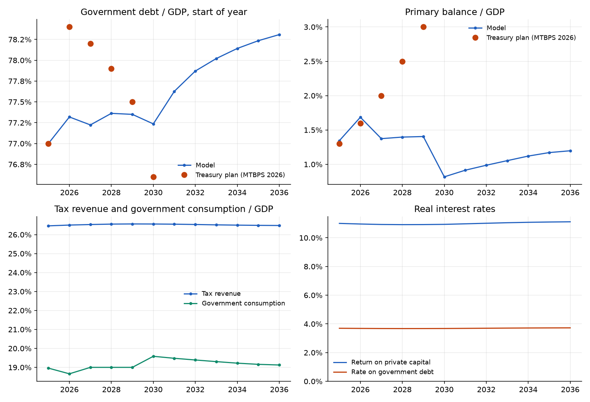
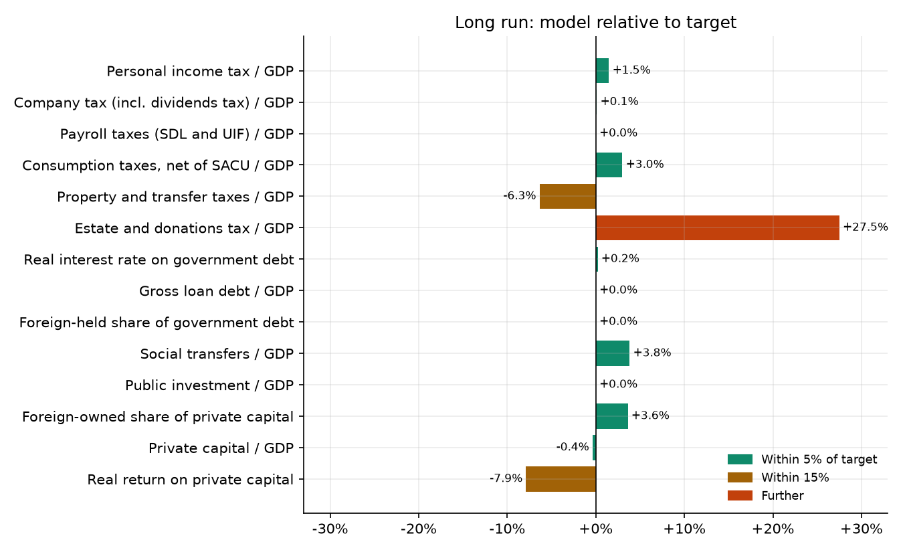
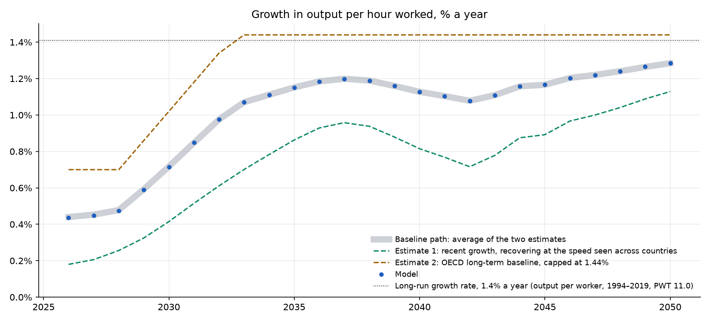
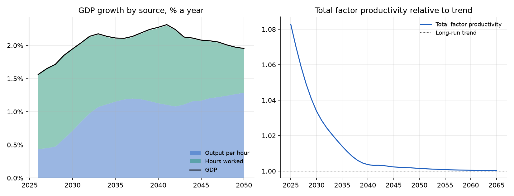
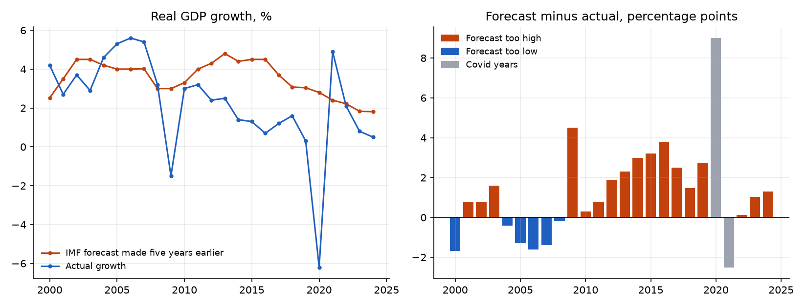
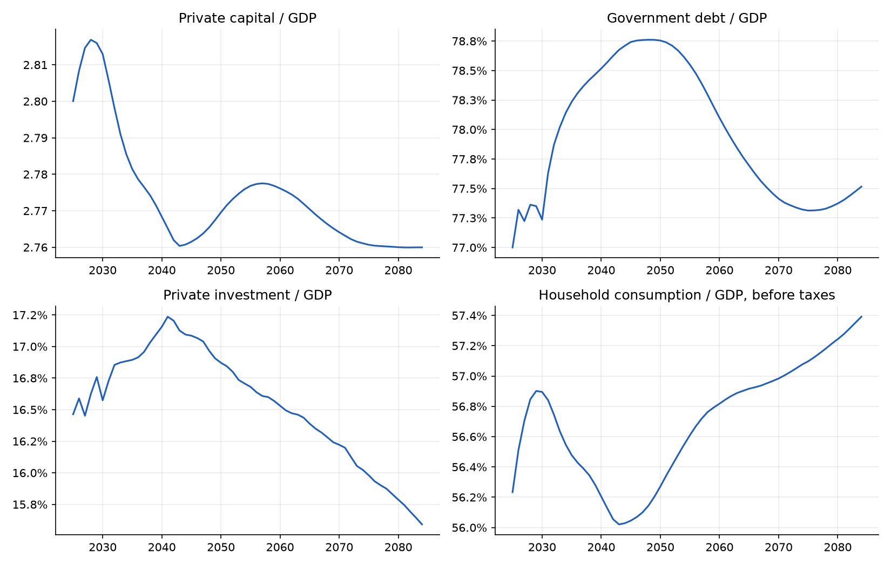
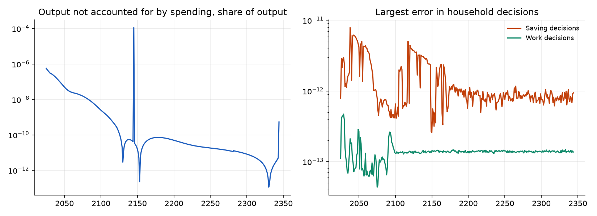
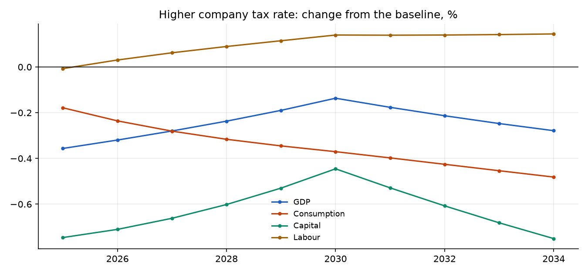

Calibration Scorecard#
This chapter shows how closely the baseline matches South African data: tax collections and debt in 2025, the National Treasury’s fiscal plan, the long-run ratios, and productivity growth. Every figure and generated table comes from the model’s standard example run, examples/run_og_zaf.py, with the packaged default parameters. examples/calibration_scorecard.py rebuilds them from that run’s output; the text around them is written by hand.
2025: the starting year#
Tax collections, debt and capital in the model’s first year, compared with published 2025 figures. Tax rates are set to reproduce collections. Debt, its interest rate and public investment are set from the data. The primary balance is a result of the model. Differences are in percentage points of GDP, except for private capital.
Measure |
Model |
Published |
Difference |
Source |
|---|---|---|---|---|
Personal income tax / GDP |
10.16% |
10.15% |
+0.01 |
PIT R790.6bn, MTBPS 2026 Table 3.1 |
Company tax (incl. dividends tax) / GDP |
5.02% |
5.02% |
+0.00 |
CIT R345.4bn + dividends tax R45.9bn, MTBPS 2026 Table 3.1 |
Payroll taxes (SDL and UIF) / GDP |
0.67% |
0.67% |
+0.00 |
Skills Development Levy R26.0bn (MTBPS 2026) + UIF contributions R26.7bn (UIF Annual Report 2025/26) |
Consumption taxes, net of SACU / GDP |
8.92% |
8.92% |
+0.00 |
VAT + fuel levy + excise + customs + other indirect taxes (9.87%) less SACU payments (0.95%), MTBPS 2026 / BR 2026 |
Property and transfer taxes / GDP |
1.61% |
1.61% |
+0.00 |
municipal property rates R101.5bn (Stats SA P9114, 2024/25) + transfer duty and securities transfer tax (BR 2026) |
Estate and donations tax / GDP |
0.08% |
0.08% |
+0.00 |
estate duty R4.8bn + donations tax R1.2bn, BR 2026 annexure |
Total tax revenue / GDP |
26.46% |
26.57% |
-0.11 |
MTBPS 2026 gross tax, less SACU payments, plus UIF and municipal rates; includes 0.12 points of minor taxes the model does not carry |
Private capital / GDP |
2.80 |
2.80 |
+0.00 |
private capital: PWT 11.0 cn/cgdpo 3.82 (2023) less the general government share 26.7% (SARB QB E-5) |
Public investment / GDP |
2.42% |
2.42% |
+0.00 |
general government GFCF 2025, SARB QB S-127 |
Real interest rate on government debt |
3.69% |
3.70% |
-0.01 |
debt service / average gross loan debt 7.08% nominal (MTBPS 2026) less ~3.4% expected inflation |
Primary balance / GDP |
1.34% |
1.30% |
+0.04 |
MTBPS 2026, 2025/26 |
Gross loan debt / GDP |
77.00% |
77.00% |
+0.00 |
Gross loan debt at the end of 2024/25, MTBPS 2026 |
Public finances to 2036#
The model’s fiscal path against the National Treasury’s 2026 Medium-Term Budget Policy Statement (MTBPS). Debt holds roughly flat, while the Treasury plans a small decline by 2030: the model keeps today’s primary surplus, and the Treasury plans to raise it every year to 2029. The baseline does not assume that consolidation. Government consumption steps up in 2030, when spending starts to follow the long-run budget rule. The rate on government debt stays at the Treasury’s effective real rate.

Fiscal path: model and Treasury plan, 2025–2036
Model debt is the stock at the start of each year, compared with the Treasury’s figure for the end of the previous fiscal year. Values are % of GDP; the real rate on debt is in %.
Year |
Debt, model |
Debt, Treasury |
Primary balance, model |
Primary balance, Treasury |
Tax revenue |
Government consumption |
Social transfers |
Public investment |
Real rate on debt |
|---|---|---|---|---|---|---|---|---|---|
2025 |
77.0 |
77.0 |
1.3 |
1.3 |
26.5 |
19.0 |
3.7 |
2.4 |
3.69 |
2026 |
77.3 |
78.4 |
1.7 |
1.6 |
26.5 |
18.7 |
3.7 |
2.4 |
3.68 |
2027 |
77.2 |
78.2 |
1.4 |
2.0 |
26.5 |
19.0 |
3.7 |
2.4 |
3.68 |
2028 |
77.4 |
77.9 |
1.4 |
2.5 |
26.6 |
19.0 |
3.7 |
2.4 |
3.67 |
2029 |
77.4 |
77.5 |
1.4 |
3.0 |
26.6 |
19.0 |
3.7 |
2.4 |
3.68 |
2030 |
77.2 |
76.6 |
0.8 |
26.6 |
19.6 |
3.7 |
2.4 |
3.68 |
|
2031 |
77.6 |
0.9 |
26.5 |
19.5 |
3.7 |
2.4 |
3.69 |
||
2032 |
77.9 |
1.0 |
26.5 |
19.4 |
3.7 |
2.4 |
3.70 |
||
2033 |
78.0 |
1.1 |
26.5 |
19.3 |
3.7 |
2.4 |
3.71 |
||
2034 |
78.1 |
1.1 |
26.5 |
19.2 |
3.7 |
2.4 |
3.71 |
||
2035 |
78.2 |
1.2 |
26.5 |
19.2 |
3.7 |
2.4 |
3.72 |
||
2036 |
78.3 |
1.2 |
26.5 |
19.1 |
3.7 |
2.4 |
3.72 |
The long run#
Ratios in the steady state, which the economy reaches after the transition, compared with South African targets. Eleven of the fourteen targets are within 5%. Three are further away. The real return on private capital is 11.0% against 12.0% in the Penn World Table; a higher return would push private capital below its target of 2.80 times GDP. Property and transfer taxes are 1.51% of GDP against 1.61%, and estate and donations tax is 0.10% against 0.08%: both were set to match 2025 collections, and their bases change relative to GDP over the transition.

Steady state: model relative to target
Ratios without a target are shown for reference.
Measure |
Model |
Target |
Source |
|---|---|---|---|
Personal income tax / GDP |
10.30% |
10.15% |
PIT R790.6bn, MTBPS 2026 Table 3.1 |
Company tax (incl. dividends tax) / GDP |
5.03% |
5.02% |
CIT R345.4bn + dividends tax R45.9bn, MTBPS 2026 Table 3.1 |
Payroll taxes (SDL and UIF) / GDP |
0.67% |
0.67% |
Skills Development Levy R26.0bn (MTBPS 2026) + UIF contributions R26.7bn (UIF Annual Report 2025/26) |
Consumption taxes, net of SACU / GDP |
9.19% |
8.92% |
VAT + fuel levy + excise + customs + other indirect taxes (9.87%) less SACU payments (0.95%), MTBPS 2026 / BR 2026 |
Property and transfer taxes / GDP |
1.51% |
1.61% |
municipal property rates R101.5bn (Stats SA P9114, 2024/25) + transfer duty and securities transfer tax (BR 2026) |
Estate and donations tax / GDP |
0.10% |
0.08% |
estate duty R4.8bn + donations tax R1.2bn, BR 2026 annexure |
Real interest rate on government debt |
3.71% |
3.70% |
debt service / average gross loan debt 7.08% nominal (MTBPS 2026) less ~3.4% expected inflation |
Gross loan debt / GDP |
76.50% |
76.50% |
MTBPS 2026 gross loan debt 2029/30 |
Foreign-held share of government debt |
25.00% |
25.00% |
non-resident share of domestic bonds, BR 2026 |
Social transfers / GDP |
3.74% |
3.60% |
social grants incl. SRD, BR 2026 Table 5.7 |
Public investment / GDP |
2.42% |
2.42% |
general government GFCF 2025, SARB QB S-127 |
Foreign-owned share of private capital |
21.24% |
20.50% |
upper bound: inward DI equity 22.7% + portfolio equity 34.8% of GDP (SARB IIP end-2025) / private K/Y; DI equity alone 0.08 |
Private capital / GDP |
2.79 |
2.80 |
private capital: PWT 11.0 cn/cgdpo 3.82 (2023) less the general government share 26.7% (SARB QB E-5) |
Real return on private capital |
11.05% |
12.00% |
PWT 11.0 real internal rate of return, 2023 |
Government consumption / GDP |
18.86% |
not targeted |
|
Net exports / GDP |
5.66% |
not targeted |
|
Total investment / GDP |
17.58% |
not targeted |
|
Household consumption / GDP |
67.09% |
not targeted |
|
Household wealth / GDP |
2.77 |
not targeted |
|
Total tax revenue / GDP |
26.79% |
not targeted |
Productivity and growth#
South Africa’s productivity growth has been weak since 2008. In the baseline it recovers gradually: growth in output per hour follows the average of two estimates, a rule based on recent growth and the OECD’s long-term baseline (the firms chapter sets out both). The long-run rate, 1.4% a year, is South Africa’s growth in output per worker over 1994–2019 in the Penn World Table (see the macro chapter).

Growth in output per hour: model, baseline path and the two estimates
GDP grows faster than productivity because hours worked rise with the working-age population, at today’s employment rates by age. Total factor productivity starts above its long-run trend and declines to it, which holds productivity growth below the long-run rate.

GDP growth by source, and total factor productivity relative to trend
Average growth by period, % a year:
Period |
GDP |
Output per hour, model |
Baseline path |
Estimate 1: recent growth |
Estimate 2: OECD |
Hours worked |
|---|---|---|---|---|---|---|
2026–2030 |
1.75% |
0.53% |
0.54% |
0.28% |
0.80% |
1.21% |
2031–2040 |
2.16% |
1.10% |
1.10% |
0.80% |
1.40% |
1.04% |
2041–2050 |
2.09% |
1.18% |
1.18% |
0.93% |
1.44% |
0.90% |
Why the baseline does not use the IMF forecast#
Since the 2009 recession, the IMF’s medium-term growth forecasts for South Africa have been too high every year. Leaving out the Covid years 2020 and 2021, every forecast made five years ahead for 2009–2024 was above the outturn; for 2013–2024 the gap averaged 2.1 percentage points a year. Before 2009 the errors went both ways. The IMF, SARB and Treasury paths assume that energy and logistics reforms succeed, so we treat them as reform scenarios rather than the baseline. The data are in data/imf_weo_growth_forecasts.csv, from the WEO historical forecasts database and the current WEO.

IMF five-year-ahead growth forecasts for South Africa and actual growth
The path to the long run#
The main ratios move smoothly from today’s values to the steady state, with no instability.

Main ratios on the baseline path, 2025–2084
Accuracy of the solution#
How closely the solution satisfies the model’s equations in each year. Output not accounted for by spending is below 0.0000006 of output in every year to 2100, and household decisions are accurate to about 0.00000000001. The one spike, 0.0001 of output in 2145, is listed under known gaps.

Errors in the solution by year, log scale
Example policy: a higher company tax rate#
The standard example raises the company tax rate to 30%. Capital, wages and GDP fall, as expected; hours worked rise slightly as households make up lost income. Changes are % from the baseline.

Higher company tax rate: change from the baseline
Variable |
2025 |
2030 |
Average 2025–2034 |
Long run |
|---|---|---|---|---|
GDP |
-0.36 |
-0.14 |
-0.24 |
-0.62 |
Consumption |
-0.18 |
-0.37 |
-0.35 |
-0.94 |
Capital |
-0.75 |
-0.45 |
-0.63 |
-1.57 |
Labour |
-0.01 |
+0.14 |
+0.10 |
+0.23 |
Real interest rate |
-1.30 |
-1.41 |
-1.31 |
-0.57 |
Wage rate |
-0.35 |
-0.28 |
-0.34 |
-0.85 |
What this calibration changed#
Setting |
Area |
Before |
After |
Reason |
|---|---|---|---|---|
Personal income tax schedule |
Taxes |
A flat 22% rate |
A progressive schedule; brackets rise with average income over time |
Collects 10.15% of GDP in 2025, as SARS did. The two lowest-income groups pay no income tax. |
Consumption tax rate |
Taxes |
15% |
15.9% |
VAT, fuel levy, excise and customs, less payments to SACU partners: 8.92% of GDP |
Company tax collections |
Taxes |
30% of the statutory rate collected |
74% of the statutory rate collected |
Company tax plus dividends tax: 5.02% of GDP |
Payroll taxes |
Taxes |
None |
1.27% of wages |
Skills Development Levy and UIF contributions: 0.67% of GDP |
Property and transfer taxes |
Taxes |
None |
Up to 0.73% of household wealth a year |
Municipal rates, transfer duty and securities transfer tax: 1.61% of GDP |
Estate and donations tax |
Taxes |
20% of bequests |
1.0% of bequests |
Estate duty and donations tax: 0.08% of GDP |
Depreciation rate |
Production |
5% a year |
4.05% a year |
Depreciation of private capital divided by the private capital stock |
Household patience (discount factor) |
Households |
0.96 |
0.871 |
Sets private capital at 2.80 times GDP, the Penn World Table figure net of government capital |
Long-run productivity growth |
Growth |
0.59% a year |
1.4% a year |
Growth in output per worker, 1994–2019 (Penn World Table 11.0: 1.44%) |
Productivity path to the long run |
Growth |
At its long-run level from the start |
Starts 8.3% above trend in 2025 and falls to it |
Output per hour grows 0.4% in 2026 and about 1.1% in the 2030s, the average of two estimates |
World interest rate |
Open economy |
4% |
6.3% |
4% plus South Africa’s sovereign premium of 2.26 points (Treasury) |
Share of extra capital demand met from abroad |
Open economy |
90% |
16% |
Foreign-owned share of capital matches the balance of payments position (21%) |
Foreign share of government debt |
Open economy |
16.2% |
25% |
Non-resident holdings of domestic government bonds |
Government debt at the start |
Debt |
84.2% of GDP |
77.0% of GDP |
Gross loan debt at the end of 2024/25 (MTBPS 2026) |
Long-run government debt |
Debt |
120% of GDP |
76.5% of GDP |
The Treasury’s projection for 2029/30 |
Real interest rate on government debt |
Debt |
Cross-country formula |
3.7%, rising when debt is above its long-run level |
The Treasury’s effective real rate on its debt |
Public investment |
Spending |
0.03% of GDP |
2.42% of GDP |
General government fixed investment (SARB) |
Government consumption |
Spending |
23.3% of GDP |
19.0%, 18.7% then 19.0% of GDP |
The first two years follow the Treasury’s primary balance plan; then the level that keeps debt stable |
Start of the long-run budget rule |
Spending |
2045 |
2030 |
After the Treasury’s medium-term plan ends |
Household wealth at the start |
Households |
Not set |
Set from the capital stock |
So that private capital is 2.80 times GDP in 2025 |
Population data |
Population |
UN data to the latest year |
UN projections to 2098; death and birth rates differ by income group |
Long-run population growth falls from 0.42% to −0.03% a year |
The parameter names and exact values are in CHANGELOG.md.
Known gaps and choices#
Item |
Status |
Detail |
|---|---|---|
Primary surplus 2027–2029 |
By design |
The model keeps a surplus of about 1.4% of GDP. The Treasury plans 2.0–3.0%. The baseline does not assume the planned consolidation, so debt stays near 77% of GDP instead of falling to 76.6%. |
Spending step in 2030 |
Known |
When the long-run budget rule starts, government consumption rises by about 0.6% of GDP in one year and the primary surplus falls to 0.8%. |
Return on capital |
Close |
11.0% in the long run, against 12.0% in the Penn World Table (11–13% over 2015–2023). A higher return would push private capital below its 2.80 times GDP target. |
Consumption taxes in the long run |
Close |
Set to match 2025 (8.92% of GDP); rise to 9.19% in the long run as consumption’s share of GDP grows. |
Social transfers |
Close |
3.74% of GDP in the long run against 3.6% in the budget. |
Long-run growth rate |
Close |
The model’s long-run productivity growth is 1.4% a year (1.41% compounded). The OECD estimate is capped at the measured 1.44%. The difference moves the baseline path by at most 0.02 points a year. |
Error in 2145 |
Open |
The accounting error is 0.0001 of output in 2145 alone, and below 0.0000006 in every year to 2100. 2145 is the last year of the listed income tax schedule; listing it to the end of the horizon should remove the error. No reported year is affected. |
Growth above the IMF |
By design |
GDP grows about 2.1% a year in the 2030s, above the IMF’s 1.8%, because hours worked rise with the working-age population. Productivity growth is below the IMF, SARB and Treasury scenarios. |
Unemployment |
Covered |
Built into earnings by age and income group: the earnings data are per person, the jobless included (see the earnings chapter). Labour supply settings are unchanged. |
Informal sector |
Covered |
34% of jobs (ILO). Reflected in tax rates, which are set from actual collections rather than statutory rates (see the taxes chapter). |
Earnings distribution |
Not re-checked |
This calibration does not change earnings by age and income group or the labour supply settings; their fit was not re-checked here. |